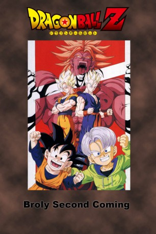

#5464 Dragonball Z - Movie 10: Brolys Rückkehr
Alternativ: Dragon Ball Z: Broly - Second Coming (Englischer Titel)
 
 IMDB-Wertung: 6.8 / 10
IMDB-Wertung: 6.8 / 10  Metascore: 0
Metascore: 0 
Broly, der legendäre Super-Saiyajin, kehrt auf die Erde zurück, um sich an Son-Goku, von dem er vor Jahren besiegt wurde, zu rächen. Allerdings weilt Son-Goku gerade mal wieder im Jenseits, so dass sich Broly zuerst einmal andere Gegner suchen muss, nämlich Son-Goten und Trunks. Jedoch haben die beiden gegen Broly keine Chance. Da greift Son-Gohan, angelockt durch Brolys Aura, ins Geschehen ein. Wird Son-Gohan den legendären Super-Saiyajin besiegen können, oder wird erneut die Hilfe von Son-Goku aus dem Jenseits nötig sein?
Jahr: 1994
Dauer: 52 Minuten
FSK: 12
Land: Japan Studio: Asia Video Publishing Co. Ltd.Tonspuren: DD5.1 - ,
Untertitel: Deutsch,
Auflösung: 1080p (1920x1080) Größe: 2744 MB
Genre: Action, Sci-Fi, Komödie, Abenteuer, Animation/Trick
Regisseur: Shigeyasu Yamauchi
Drehbuch: Peter Greenaway
Soundtrack:
Darsteller:
Datei: X:\Kinder Anime\Dragonball Z Movie\Dragonball Z - Movie 10 Brolys Rückkehr (1994, FSK12, 1920x1080).mkv seit 02.02.2017
Festplatte: Kinder-Filme+Trick
 Es gibt insgesamt 19 Filme in der Gruppe 'Kinder Anime\Dragonball Z Movie'
Es gibt insgesamt 19 Filme in der Gruppe 'Kinder Anime\Dragonball Z Movie'